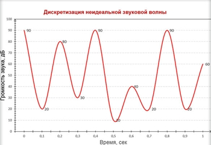
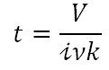
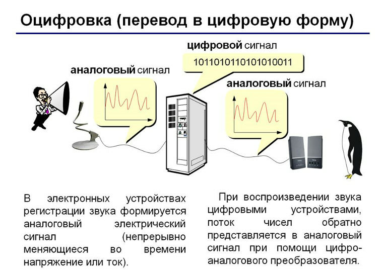

Представление и измерение текстовой, графической и звуковой информации
Решение задач
Цели
- Объяснить различие между аналоговым и цифровым звуком;
- Познакомиться с принципами кодирования звуковой информации;
- Сформировать у учащихся представление о частоте дискретизации и глубине кодирования звука
- Сформировать умения нахождения объёма звуковой информации.
Инструменты:
- ОС Windows
- Браузер
Задание 1. Записать в конспект понятия кодирования и декодирования информации
Формы представления и преобразования информации
Кодирование
звуковой
информации
В
течение дня обычный человек слышит большое количество различных звуков.
- Человек,
который что-то произнес.
- Проезжающий
поезд, от которого исходит шум.
- Музыкальные
инструменты, на которых играет
музыкант.
При
этом амплитуда определяет громкость звука, а частота — его
тон. Чем больше
амплитуда звуковых колебаний, тем он громче. А частота писка комара
больше
частоты сигнала автомобиля. Частоту измеряют в Герцах.
1Гц
— это одно колебание в секунду.
Звук
обладает множеством характеристик, но ключевыми являются лишь две:
- Амплитуда звуковой волны.
- Частота
звуковой волны.
Амплитуда
–
громкость или сила
звука, измеряемая в децибелах. Чем
больше амплитуда сигнала, тем он громче для
человека.
Уровень
громкости звука является
относительной величиной. Болевой порог для человека составляет уровень
громкости звука в 120-130 дБ.
Частота
–
отношение количества колебаний звуковой волны в единицу времени. Иногда
вместо
термина «частота звука» используется термин
«высота звука». Чем
больше частота сигнала, тем выше тон.
-
1
(одно)
измерение
в секунду соответствует частоте 1
Гц;
-
1000
измерений в секунду соответствует частоте 1 кГц.
При
преобразовании звуковой информации в цифровую форму ее
подвергают дискретизации
и квантованию.
Частота
дискретизации звука
— это
количество измерений громкости звука за одну секунду.
Привидение
в соответствие уровня сигнала определенной величине диапазона и есть
квантование. Понятно, что как бы часто мы не проводили измерения, все
равно
часть информации будет теряться. Однако и понятно, что чем чаще мы
проводим
замеры, тем точнее будет соответствовать цифровой звук своему
аналоговому
оригиналу.
Дискретизация
–
процесс преобразования непрерывного сигнала в дискретный, то есть
прерывный
сигнал.
Также,
чем больше бит отведено под кодирование уровня сигнала (квантование),
тем
точнее соответствие.

Под
кодированием
звуковой
информации следует понимать преобразование
аналогового звукового
сигнала в формат, понятный процессору персонального компьютера, то есть
в двоичный код.
Двоичный
или бинарный код
– цепочки битов, которые принимают только одно из
двух предопределенных значений, – 0 или 1.
Дискретизация
звуковой волны
Таблица
значений
громкости звуковой волны при частоте дискретизации 10 Гц:
|
Время,
сек |
0 |
0.1 |
0.2 |
0.3 |
0.4 |
0.5 |
0.6 |
0.7 |
0.8 |
0.9 |
1 |
|
Громкость,
дБ |
90 |
20 |
80 |
30 |
90 |
10 |
40 |
20 |
90 |
20 |
60 |
Значения
громкости находятся в диапазоне от 0
до 100 децибел. Следовательно, у нас должна быть возможность
запоминания 101
различного состояния, значения.
Рассчитаем
минимальное количество бит
информации, необходимой для кодирования 101 различного значения. Решим
простейшее показательное неравенство: 2x
≥ 101: x = 7,
так как 27
= 128 ≥ 100. Следовательно, для кодирования
звуковой информации
нам будет достаточности разрядности в 7
бит.
Сейчас мы произведем операцию квантования по отношению к замеренной громкости звуковой волны:
|
Время,
сек |
0 |
0.1 |
0.2 |
0.3 |
0.4 |
0.5 |
0.6 |
0.7 |
0.8 |
0.9 |
1 |
|
Громкость,
дБ |
90 |
20 |
80 |
30 |
90 |
10 |
40 |
20 |
90 |
20 |
60 |
|
Двоичный
код |
1011010 |
0010100 |
1010000 |
0011110 |
1011010 |
0001010 |
0101000 |
0010100 |
1011010 |
0010100 |
0111100 |
На
этом этап кодирования
звуковой информации
можно считать законченным. В оперативной памяти персонального
компьютера
входной аналоговый звуковой сигнал будет представлен в следующем
виде: 101101000101001010000001111010110100001010
01010000010100101101000101000111100
В
современных условиях кодирование
звуковой информации
осуществляют
при частоте дискретизации 44100 Гц. На практике обеспечивают 44100
замеров за 1
секунду.
Чем
чаще производятся замеры исследуемой
величины, тем точнее кодируется
звуковая информация.
Глубина
кодирования звука
—
это количество возможных уровней сигнала.
Другими словами глубина кодирования это точность измерения сигнала.
Глубина
кодирования измеряется
в битах.
Зная
глубину
кодирования, можно легко узнать количество
уровней сигнала цифрового звука.
Для
этого используем формулу:
N=2i,
где
N
— количество возможных
уровней (разбиения
амплитуды
сигнала)
громкости
i —
глубина кодирования (число
бит
отводимых для кодирования уровней амплитуды сигнала, разрешение).
|
Количество
возможных уровней громкости |
N=2i |
Глубина
кодирования |
|
255 |
28=255 |
8
бит |
|
65536 |
216=65536 |
16
бит |
|
16
777 216 |
224=16777216 |
24
бита |
|
ПРИМЕР
1 Какой
объем будет иметь звуковой монофонический файл содержащий звук, если
длительность звука 1 минута, глубина кодирования 8 бит, а частота
дискретизации 22050Гц? |
||
|
Дано |
Решение |
Расчёты |
|
t=1 1мин=60сек i=8
бит |
Количество
измерений уровня сигнала за все время(N)
= частота дискретизации* время На одно измерение требуется 8 бит памяти |
22050*60=1
323 000 1
323 000*8 = 10 584 000 бит 10584000/8=1
323 000 байт. 1
323 000/1024=1
291,9921875 Кбайт 1
291,9921875 /1024=1
291,9921875/1024=1,26Мбайт |
|
V-? |
|
Ответ:
1,26Мбайт. |
Чем
больше частота дискретизации (меньше шаг дискретизации) и больше
разрешение, тем качественнее будет аудиозапись.
Чем
выше частота дискретизации и глубина кодирования
звука, тем точнее цифровое представление оригинального непрерывного
звукового
Для
расчета информационного объема звукового файла (размер аудиофайла,
звукозаписи) определяют по формуле:
где
i
– глубина кодирования (разрешение)
t
- время звучания файла,
k
- коэффициент, значение которого
зависит от качества звука:
моно
- 1,
стерео
– 2 - при кодировании стерео звуковой информации процесс
дискретизации
производится отдельно и независимо для левого и правого каналов
используется
две дорожки,
квадро
– 4.
|
ПРИМЕР
2 Какой
объем будет иметь звуковой монофонический файл содержащий звук, если
длительность звука 1 минута, среднем
качестве звука (16
бит, 24
кГц):? |
||
|
Дано |
Решение |
Расчёты |
|
t=1мин=60сек i=16
бит n=24000Гц K=1 |
V
= 16⋅60⋅24000⋅1 = 23040000 бит = 2880000 байт = 2812,5
Кбайт=2,746582031 Мбайт |
|
|
V-? |
|
Ответ:
2,75 Мбайт. |
|
ПРИМЕР
3 Оценим
информационный объём цифрового стереозвукового файла длительностью
звучания 1
секунда при среднем качестве звука (16
битов, 24000
измерений в секунду) |
||
|
Дано |
Решение |
Расчёты |
|
t=1сек i=16
бит n=24000Гц K=2 |
|
V
= 16⋅60⋅24000⋅2 = 46080000 бит = 768000 бит
= 5760000 байт = 5625 Кбайт =5,493164063
Мбайт |
|
V-? |
|
Ответ:
5,5
Мбайт. |
Решение
задач по теме
«Кодирование звука»
|
ПРИМЕР
4 Производится одноканальная
(моно) звукозапись с частотой дискретизации 48 кГц и глубиной
кодирования 16 бит. Запись длится 2 минуты, ее результаты записываются
в файл, сжатие данных не производится. Какое из приведенных ниже чисел
наиболее близко к размеру полученного файла, выраженному в мегабайтах? Выберите
правильный ответ: 2) 12 3) 13 4) 20 |
||
|
Дано |
Решение |
Расчёты |
|
t=2
мин i=16
бит n=48кГц K=2 |
t=2
мин=120 сек i=16
бит=2байта n=48000Гц |
V
=16 ⋅48000
⋅1
20 ⋅2⋅
= 92160000бит=11520000
байт 11520000/10242
= 10,99 Мб, что близко к 11 Мб |
|
V-? |
|
|
|
ПРИМЕР
5
Проводилась
одноканальная (моно) звукозапись с частотой дискретизации 16 кГц и
32-битным разрешением. В результате был получен файл размером 1 Мбайт,
сжатие данных не производилось. Какая из приведенных ниже величин
наиболее близка к времени, в течение которого проводилась запись? 1)
10 сек 2)
30 сек 3)
50 сек 3)
75 сек |
||
|
Дано |
Решение |
Расчёты |
|
i=32
бит n=16кГц K=2
V=1
Мб = 1048576 байт |
i=32
бит=4 байта n=16000Гц 
|
|
|
t
-? |
|
Правильный ответ указан под номером 1. |
Общая
формула расчета объема памяти, необходимой для хранения закодированного
видеофайла:
|
V = [Память, занимаемая звуковым сигналом] ∙ [Память, занимаемая графическими кадрами] = =
[Память, занимаемая звуковым сигналом] ∙ [Память, занимаемая одним
кадром] ∙ [Количество кадров]. |
|
ПРИМЕР
6 Дан
видеофайл, который длится 52 секунды. Известно также, что частота смены
кадров составляет 25 раз в секунду. Каждый кадр представляет собой
изображение, имеющее разрешение 1280 на 1024 пиксела. Также известно,
что цвет кодируется в 24-х битной RGB-модели. Частота дискретизации
звука составляет 44.1 КГц, а разрядность звуковой карты равна 2 байта.
Необходимо найти информационный объем данного видеофайла. |
|
|
Дано |
Решение |
|
t=52с iзв=2
байта=16 бит n=44,1кГц разрешение
1280 на 1024 пиксела iиз
=24 Количество
кадров =25 |
|
|
Vвидео
|
Vвидео=0.4
Гбайт |
|
ПРИМЕР
7 Музыкальный
фрагмент был оцифрован и записан в виде файла без использования сжатия
данных. Получившийся файл был передан в город А по каналу связи за 30
секунд. Затем тот же музыкальный фрагмент был оцифрован повторно с
разрешением в 2 раза выше и частотой дискретизации в 1,5 раза меньше,
чем в первый раз. Сжатие данных не производилось. Полученный файл был
передан в город Б; пропускная способность канала связи с городом Б в 4
раза выше, чем канала связи с городом А. Сколько секунд длилась
передача файла в город Б? В ответе запишите только целое число, единицу
измерения писать не нужно. |
||
|
Дано |
Решение |
|
|
t1=30 с оцифрован повторно с разрешением в 2 раза выше Частотой дискретизации в 1,5 раза меньше пропускная способность канала связи с городом Б в 4 раза |
Пусть размер первого получившегося файла x. Тогда размер второго — x умножить на 2 : 1.5 =4*x/3 . То есть он будет передаваться 4/3 дольше. Пропускная способность канала в город Б выше в 4 раза, то есть время будет в 4 раза меньше, чем при передаче в город А. Итого получаем время: 30 *4/3/4=10. |
|
|
Время t2 |
t2=10 |
|
Кстати,
сам процесс кодирования
видеоинформации занимает
значительное время и зависит от характеристик процессора персонального
компьютера. Среди всех земных профессий можно выделить профессию
видеомонтажера, который наиболее интенсивно из всех занимается
обработкой и
отвечает за правильность кодирования
видеоинформации.
Существуют
различные методы кодирования звуковой информации двоичным кодом,
среди которых можно выделить два основных направления: метод FM и метод Wave-Table.
Таблично-волновой
метод
(Wave-Table)
основан на том, что в заранее
подготовленных таблицах хранятся образцы звуков окружающего мира,
музыкальных
инструментов и т. д. Числовые коды выражают высоту тона,
продолжительность и
интенсивность звука и прочие параметры, характеризующие особенности
звука.
Поскольку в качестве образцов используются
«реальные» звуки, качество звука,
полученного в результате синтеза, получается очень высоким и
приближается к
качеству звучания реальных музыкальных инструментов.
Звуковые
файлы имеют несколько форматов. Наиболее популярные из них MIDI, WAV, МРЗ.
Формат
MIDI (Musical
Instrument Digital Interface)
изначально был предназначен для управления музыкальными инструментами.
В
настоящее время используется в области электронных музыкальных
инструментов и
компьютерных модулей синтеза.
Формат
аудиофайла WAV
(waveform)
представляет произвольный звук
в виде цифрового представления исходного звукового колебания или
звуковой
волны. Все стандартные звуки Windows имеют расширение
WAV.
Формат МРЗ (MPEG-1
Audio Layer 3)
— один из цифровых
форматов хранения звуковой информации. Он обеспечивает более высокое
качество
кодирования.
Задание 0. Вычислите объём передаваемой информации в Мбайт/с? Если известно, что телевизионный формат воспроизведения видео использует разрешение кадра 720x576 точек с 24 битовой глубиной цвета. Скорость воспроизведения 25 кадров в секунду.
Это составляет очень большой поток данных, поэтому при хранении и передачи видео используют разные методы сжатия (MPEG, AVI).
В современных цифровых видеокамерах запись видео выполняется в цифровой форме после предварительного сжатия.
Представление звуковой информации